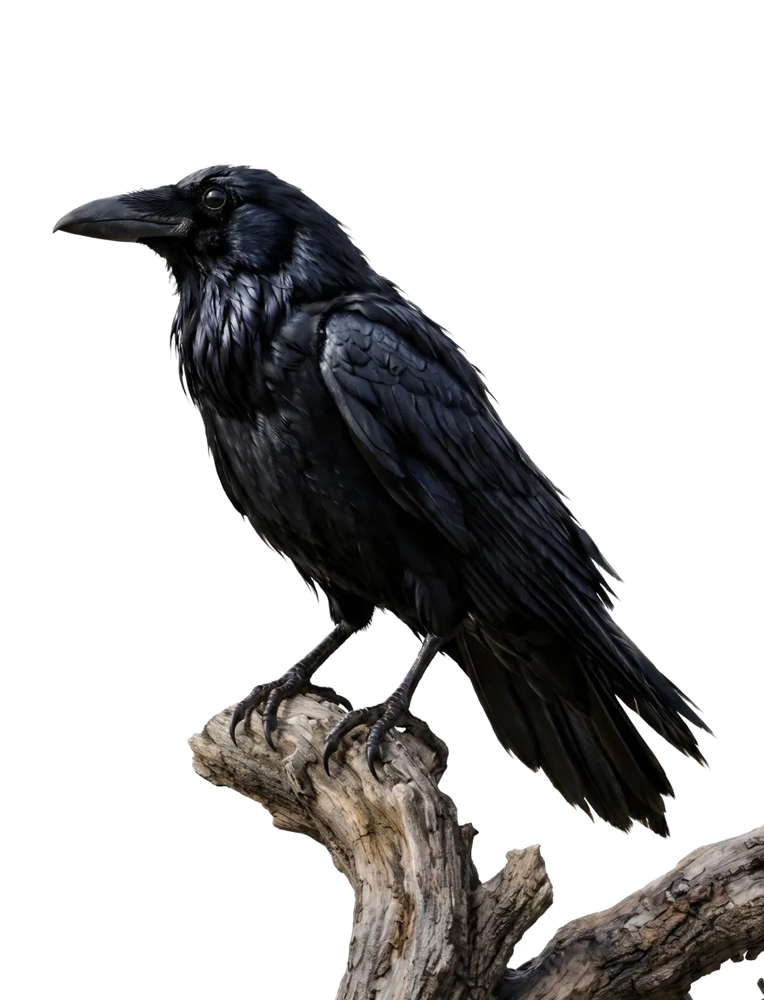
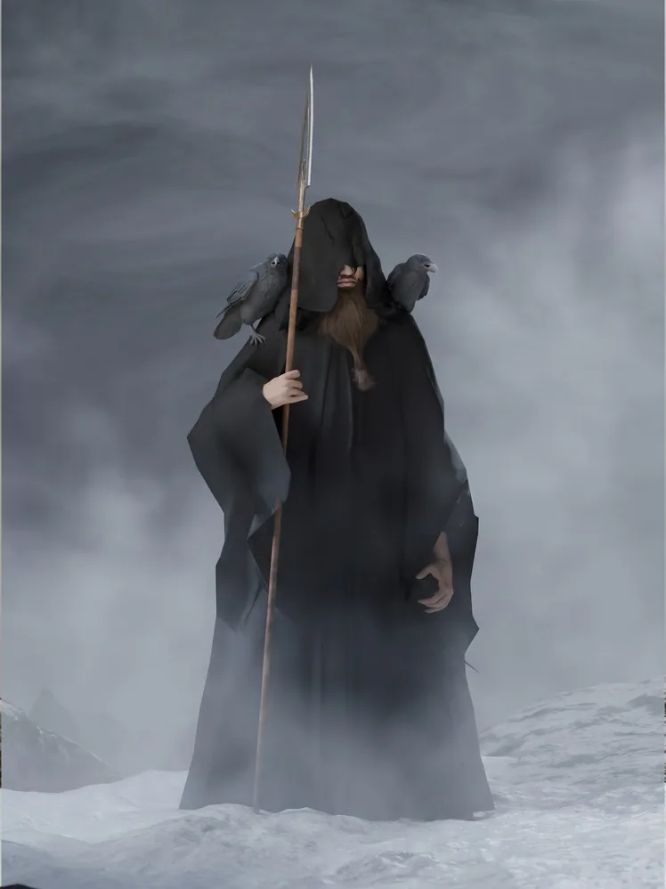
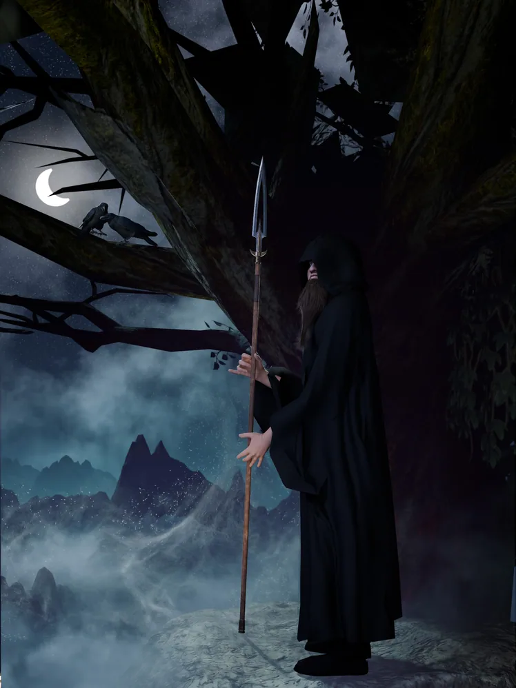
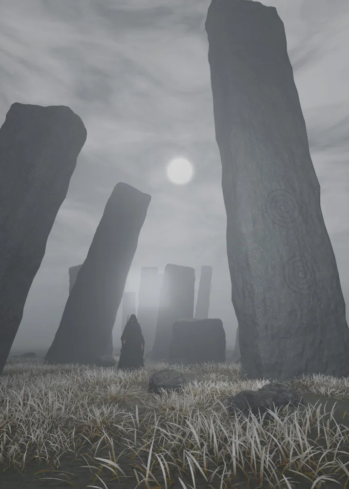

Đóa Hoa Thép Trên Đe Lạnh
Sợi dây vô hình buông rơi Brann ngay giữa chừng một nhịp thở.
Không có tiếng mặt nước khép lại. Không có tiếng sóng vỗ bờ. Chỉ có một khoảng hẫng ngắn ngủi, tĩnh lặng như tích tắc nằm giữa hai nhịp tim đập, rồi toàn thân cậu đổ ập xuống một bề mặt vừa lạnh buốt vừa mềm xốp. Có thứ gì đó đang rơi xuống gáy cậu, nhẹ bẫng, từng chút một.
Tuyết.
Brann nằm sấp, hoàn toàn bất động.
Cậu nín thở chờ đợi. Chờ một tiếng chuông pha lê ngân vang, một khúc đàn bốn nốt đứt quãng, hay một giọng nữ sắc lạnh như đinh đóng cột quát bảo cậu cút đi. Thế nhưng chẳng có ai lên tiếng cả. Chỉ có tuyết vẫn âm thầm rơi, mà tuyết trắng thì vốn dĩ chẳng biết nói lời nào.
“Nanna?”
Tiếng gọi khản đặc của cậu rơi tõm xuống nền tuyết trắng xóa rồi tắt lịm, nhỏ nhoi và vô âm như một viên sỏi ném vào tấm chăn bông dày.
Brann bật phắt người ngồi dậy. Cú bật quá đột ngột khiến đầu óc cậu chưa kịp thích ứng, cả thế giới quanh cậu chao nghiêng đi một vòng rồi mới chịu đứng yên. Cậu hoang mang quay phắt sang trái, rồi lại ngó sang phải, cố tìm kiếm chiếc vỏ ốc anh vũ đen nhánh, tìm vùng vực thẳm không đáy, tìm đàn cá ngựa bằng ánh bạc. Tìm bất cứ một hình hài nào quen thuộc vừa mới ở bên cạnh mình tích tắc trước đó.
Chẳng có vực thẳm nào cả. Không có bóng tối của biển sâu. Và cũng chẳng có nàng.
Theo phản xạ hoảng loạn, hai bàn tay cậu vội vã sờ soạng khắp cơ thể mình như một người vừa nhận lại món đồ đem giặt, cuống quýt kiểm tra xem có bị thất lạc mảnh nào không. Đôi tay. Đôi chân. Cái bụng tròn. Chiếc túi da sũng nước vẫn còn đeo trĩu nặng bên vai; những kỷ vật cất bên trong khẽ va vào nhau kêu lách cách mỗi khi cậu cựa mình. Tất cả mọi thứ thuộc về cậu vẫn còn nguyên vẹn. Thứ duy nhất sai lệch hoàn toàn là nơi chốn cậu đang đặt chân.
Nơi này là đâu? Cô ấy đâu mất rồi? Tại sao mọi chuyện lại đột ngột thế này?
Hàng loạt câu hỏi ập vào tâm trí cậu cùng một lúc, hỗn loạn chen chúc nhau mà chẳng câu nào chịu nhường câu nào. Brann cố hít vào một hơi thật sâu như người ta vẫn thường khuyên nhau lúc hoảng loạn; nhưng mới hít được nửa chừng thì cậu chợt nhớ ra là mình đang sợ hãi, thế là nửa hơi thở còn lại cứ thế nghẹn ứ ngay nơi lồng ngực.
Chầm chậm, người thợ rèn ngẩng đầu nhìn lên.
Phía trên đỉnh đầu cậu hoàn toàn không có bầu trời. Chỉ có một cái cây.
Những chiếc rễ cây khổng lồ trồi lên khỏi mặt tuyết trắng như sống lưng của những con tàu cổ đại bị lật úp — chiếc rễ nào cũng đồ sộ hơn bất kỳ ngôi nhà nào Brann từng thấy trong đời, lớp vỏ xù xì phủ đầy rêu xám và đóng băng thành từng mảng dày. Chúng đan chéo, chồng chất và quấn chặt lấy nhau trước khi đâm sâu xuống lòng đất ở những góc khuất mà tầm mắt cậu không tài nào dõi theo nổi. Giữa những khe rễ trũng sâu, tuyết trắng đọng lại thành từng vũng dày, trông êm ái như những chiếc gối bông.
Tuyết rơi rất dày và rất chậm, không phát ra lấy một tiếng động nhỏ, lặng lẽ phủ lên tấm áo choàng, lên bộ râu rối bời, lên cả mu bàn tay trái mọc đầy nấm trắng của cậu. Đậu xuống da thịt rồi mà tuyết vẫn không chịu tan. Đã quá lâu rồi Brann không nhìn thấy tuyết, đến mức cậu đã quên bẵng mất rằng bông tuyết quê nhà lại có sức nặng đến thế: mỗi bông tuyết chạm vào da đều để lại một vết ấn lạnh buốt, rõ ràng như đầu ngón tay người chạm vào.
Thứ giá lạnh ở nơi này khác hẳn cái lạnh cắt da trên đỉnh núi, và cũng chẳng giống cái lạnh câm lặng dưới đáy đại dương. Núi cao lạnh bằng gió rít. Biển sâu lạnh bằng sự tĩnh mịch. Còn cái lạnh ở nơi này lại mang hình hài của sự chờ đợi. Nó đứng im lìm bao quanh lấy cậu — không cắn xé, không ép nghẹt, chỉ điềm nhiên hiện diện như một chủ nhân đã ngồi đợi sẵn trong phòng tối từ rất lâu trước khi cậu kịp đẩy cửa bước vào.
Và từ phía sau đám rễ cây chằng chịt ấy, thân cây chính thức vươn lên.
Nó vĩ đại đến mức khi đứng dưới chân nó, trí não con người lập tức từ bỏ khái niệm rằng mình đang đứng trước một cái cây. Đó là một bức tường thành bất tận thuộc về một chiều không gian khác. Lớp vỏ của nó mang màu xám đen của đá cổ, nứt toác thành những khe vực sâu hoắm rộng bằng cả một con hẻm nhỏ, chất đầy tuyết trắng bên trong. Càng vươn lên cao, thân cây càng nhòe dần vào màn đêm đen kịt, không một đôi mắt phàm trần nào có thể nhìn thấu ngọn của nó nằm ở đâu. Dọc theo những rãnh nứt sâu thẳm trên vỏ cây, có vài đường vân màu bạc rất mảnh đang ẩn hiện — lóe sáng yếu ớt rồi lịm tắt, rồi lại bừng lên, nhịp nhàng hệt như mạch máu của một vị thần khổng lồ đang chìm trong giấc ngủ say.
Yggdrasil. Cây Thế Giới.
Brann nhận ra ngay lập tức mùi hương của nó. Mùi nhựa cây cổ thụ nồng đượm, mùi đất ẩm ướt dưới băng giá, và mùi lành lạnh đặc trưng của tuyết đọng trên thớ gỗ mục. Đó là thứ mùi hương mà cậu đã hít thở suốt cả thời thơ ấu cho đến tận lúc trưởng thành mà chưa bao giờ mảy may để tâm tới — giống như chẳng có ai lại đi để ý xem mùi hương trong chính ngôi nhà của mình là mùi gì.
Đôi mắt người thợ rèn lần dọc theo thân cây khổng lồ, nhìn ngược lên cao, rồi đột ngột khựng lại ở một vị trí cách mặt đất chừng hai sải tay người lớn.
Tại nơi đó, những đường vân gỗ cổ thụ tự động uốn lượn, đan cài vào nhau tạo thành hình dáng của một khung cổng vòm.
Hai cánh cổng gỗ hiện đang khép chặt, liền lạc hoàn toàn với lớp vỏ cây xung quanh không một kẽ hở. Thế nhưng Brann vẫn nhớ như in từng đường vân nứt trên đó. Cậu vẫn nhớ cả thứ ánh sáng rực rỡ từng một lần tràn ra từ khe cửa ấy — thứ ánh sáng ấm áp mà không gây bỏng rát, dịu dàng như nắng xuân vừa bừng lên sau một mùa đông dài đằng đẵng. Cánh cổng hình cây vẫn nằm nguyên ở đó, im lìm như thể chưa từng có ai bước qua nó, và cũng như thể nó chưa bao giờ mở ra.
Ngay phía trên vòm cổng, một cành cây già cỗi vươn ngang ra khoảng không, đen đúa và trơ trụi không một chiếc lá.
Brann nhìn trân trân vào cành cây khô khốc ấy một hồi lâu, trong lòng dấy lên cái cảm giác ngượng ngập y hệt như khi ta vô tình chạm mặt một người quen cũ trên phố nhưng lại đang cố tỏ vẻ không nhận ra họ. Rồi cậu vội vã cụp mắt nhìn đi chỗ khác.
Chính là nơi này, cậu thầm nhủ, cổ họng đắng ngắt. Ngày hôm đó, mình đã đứng ở đúng vị trí này.
Cậu đã ròng rã băng qua khắp các cõi giới. Đã từng bay vút lên bầu trời, đã từng rơi tự do xuống biển thẳm, đã từng chìm xuống tận đáy vực tối tăm và ngồi bó gối trước một cánh cửa không lối vào… để rồi sau tất cả, cậu lại bị ném trả về đúng nơi mình đã bắt đầu. Bản tính của tộc người lùn vốn ghét cay ghét đắng những thứ xoay vòng không có điểm dừng. Đối với Brann lúc này, trò đùa của số phận thực sự đã đi quá giới hạn.
Ngay trên cổ tay trái của cậu, sợi chỉ ánh bạc của Nanna bất chợt lóe sáng một nhịp.
Rất yếu ớt. Dịu nhẹ và ấm áp như một đốm than hồng cuối cùng còn sót lại dưới lớp tro tàn. Hai vòng dây mảnh mai thắt lại bằng một nút buộc nhỏ.
Mỗi khi sợi dây trên lưng ngươi bị kẻ đứng sau giật mạnh, chiếc vòng nơi cổ tay này sẽ lập tức phát sáng, lời dặn của nàng tiên sứa lại vang vọng bên tai cậu.
Vậy là sợi dây vô hình trên lưng đã hoàn thành xong nhiệm vụ của nó. Nó đã lôi cổ cậu từ đáy vực Helheim lên tận đây, rồi thẳng thừng buông cậu rơi xuống nền tuyết chẳng khác nào người ta quẳng một món đồ đã hết giá trị sử dụng. Nhận thức được sự thật đó khiến sống lưng Brann lạnh toát — một cơn ớn lạnh không hề liên quan đến tuyết đầu mùa.
Đầu óc cậu hoàn toàn trống rỗng. Lúc chia tay, Nanna đã gào lên dặn cậu: Hãy đi tiếp, và mở to mắt ra mà nhìn! Thế nhưng phải nhìn cái gì, nhìn vào đâu giữa chốn rừng tuyết cô quạnh này thì nàng lại chưa kịp nói hết câu. Brann đứng chơ vơ giữa những chiếc rễ cây khổng lồ với đôi bàn tay đang run lên bần bật, lạc lõng và bất lực hệt như một đứa trẻ bị người lớn bỏ rơi giữa phiên chợ chiều, trong lòng bàn tay vẫn còn nắm chặt một món quà mà chẳng biết phải đem dùng vào việc gì.
Đúng vào giây phút đó, tuyết đột ngột ngừng rơi.
Không phải là bầu trời quang đãng trở lại. Mà là hàng vạn bông tuyết đang trên đà rơi xuống bỗng nhiên đứng khựng lại, treo lơ lửng bất động giữa không trung quanh người Brann — giống hệt như những hạt bụi nhỏ đột nhiên đứng im trong căn phòng kín khi có người nín thở. Gió rừng cũng tắt bặt. Không gian tĩnh mịch đến mức Brann nghe thấy tiếng tim mình đập thình thịch bên màng nhĩ, to và rõ đến nỗi cậu chỉ ước sao có thể van xin nó đập nhỏ lại một chút.
Cảnh tượng kỳ dị này, cậu đã từng chứng kiến một lần rồi. Vào một đêm mùa đông tưởng chừng đã xa xôi lắm.
Từ sâu thẳm dưới lòng đất băng giá, một âm thanh trầm đục bắt đầu dội lên.
ẦM.
Thanh âm ấy trầm hùng và kéo dài, nghe như thể trái tim khổng lồ của cả thế gian vừa mới co bóp một nhịp. Ngay lập tức, những đường vân bạc dọc theo thân cây Yggdrasil đồng loạt bừng sáng chói lòa, chạy dọc theo các khe nứt vỏ cây, truyền xuống đám rễ khổng lồ rồi lan tỏa ra khắp nền tuyết trắng. Và ngay tại vị trí chính giữa hai bả vai của Brann — nơi sợi dây vô hình đang cắm rễ — bỗng truyền đến một cảm giác nhói nhẹ, nhịp nhàng gõ đúng theo nhịp đập của lòng đất như có đầu ngón tay ai đang gõ nhịp lên lưng cậu.
Một nhịp. Rồi hai nhịp.
Brann từ từ, thật chậm rãi quay đầu nhìn lại phía sau.
Trên vòm rễ cây cao hơn đỉnh đầu cậu chừng hai sải tay, có hai con quạ lớn đã bay đến đậu từ lúc nào. Đôi tai cậu hoàn toàn không nghe thấy tiếng vỗ cánh khi chúng đáp xuống. Bộ lông của chúng đen đặc đến mức ngay cả ánh tuyết trắng xóa cũng không tài nào phản chiếu lên được. Một con đang quay mặt đi hướng khác, dáng vẻ thờ ơ như kẻ đang chán ngắt. Con còn lại thì nghiêng hẳn đầu sang một bên, đôi mắt đen láy nhìn thẳng xuống Brann.
Người thợ rèn nhận ra ngay con quạ đang nghiêng đầu kia. Chính là kẻ đã đậu trên mắt xích gỉ sét ở mỏm đá Vanaheim. Là kẻ đã vỗ cánh một nhịp nơi rìa bóng tối Helheim. Và cũng chính là kẻ đã cất tiếng kêu khô khốc ngay phía trên mặt biển trước khi cậu trồi lên. Đã ba lần liên tiếp cậu tự trấn an bản thân rằng đó chỉ là sự trùng hợp ngẫu nhiên, và lần tự lừa dối sau lại càng nghe gượng gạo hơn lần trước.
Qu-áa.
Tiếng kêu vang lên rất khẽ giữa không gian đóng băng, nghe gần như có phần lịch sự.
Cùng lúc ấy, ngay trên thân cây cổ thụ, đường khe nứt nằm giữa hai cánh cổng gỗ bắt đầu rực sáng.
Hai cánh cổng từ từ hé mở.
Không hề có tiếng gỗ rạn nứt hay tiếng bản lề rên rỉ. Cánh cổng tự động tách đôi một cách êm ái và chuẩn xác như thể nó đã được huấn luyện để thực hiện động tác này từ thuở khai thiên lập địa. Thế nhưng, nhìn qua khe cửa mở rộng ấy, bên trong hoàn toàn không còn bầu trời hoàng hôn rực lửa, không có những hòn đảo đá lơ lửng giữa tầng không, và cũng chẳng còn mùi bánh mì mới nướng thơm lừng như lần đầu tiên cậu bước qua. Phía sau cánh cổng lúc này chỉ có bóng tối đặc quánh, điểm xuyết một thứ ánh sáng bạc mỏng manh như ánh đèn hắt ra từ một căn phòng bỏ hoang đã lâu không có bước chân người.
Từ trong khe tối ấy, một bóng người cao lớn thong thả bước ra.
Dáng vóc của ông ta cao lớn hơn trong trí nhớ của Brann rất nhiều. Khoác trên mình tấm áo choàng màu xám tro đã sờn cũ, mái tóc bạc trắng xõa dài qua vai, đầu đội chiếc mũ rộng vành kéo sụp xuống che khuất một nửa gương mặt. Ở nửa gương mặt lộ ra ngoài, con mắt duy nhất còn lại đang tỏa sáng rực rỡ và sắc lạnh như một ngôi sao cô độc giữa đêm đông. Hàng ngàn bông tuyết đang treo lơ lửng quanh người ông ta, nhưng tuyệt nhiên không một bông tuyết nào dám chạm vào bờ vai ấy. Ông ta bước từ khung cổng xuống nền tuyết mà không phát ra một tiếng động nhỏ; đôi quạ đen trên rễ cây lập tức thu cánh, cung kính nhích sang hai bên để nhường lối. Luồng sáng bạc từ khe cổng phía sau hắt mạnh tới, kéo cái bóng của ông ta vươn dài trên mặt tuyết — dài hơn chính cơ thể ông ta, vượt qua cả những chiếc rễ cây đồ sộ, trườn thẳng tới chạm vào ngay dưới mũi giày của Brann.
Cúi nhìn cái bóng đen đặc dưới chân mình, Brann chợt rùng mình nhận ra nó hoàn toàn không mang hình dáng cái bóng của một con người.
Người thợ rèn giật bắn mình.
Theo bản năng, cậu lùi thốc lại phía sau một bước, rồi bước nữa; gót ủng da vấp mạnh vào một nhánh rễ cây trồi lên khiến cậu mất đà ngã phịch xuống nền tuyết. Hai bàn tay chống ngược ra phía sau, Brann ngửa mặt nhìn lên bóng hình cao lớn trước mặt với nỗi kinh hoàng của một đứa trẻ nửa đêm thức giấc phát hiện có kẻ lạ mặt đang đứng sừng sững ngay cuối giường mình. Trái tim trong lồng ngực cậu đập loạn xạ,颠 đảo cả nhịp thở.
Chính là ông lão ấy. Ông lão đã xuất hiện dưới gốc cây này vào cái đêm định mệnh có cuộn dây thừng.
“Ông…”
Cậu chỉ thốt ra được độc một chữ. Phần ngôn từ còn lại đã bị cổ họng khô khốc nuốt chửng.
Odin không lên tiếng đáp lời. Vị thần cổ đại chỉ đứng lặng ở đó, hai cánh tay buông thõng tự nhiên bên hông, dáng vẻ điềm tĩnh và kiên nhẫn không khác gì chính thân cây cổ thụ phía sau lưng.
“Chính là ông. Đêm hôm đó ông đã ở đây,” Brann thở dốc, giọng run rẩy đứt quãng. “Chính tay ông đã mở cánh cổng này ra. Ông đã nói với tôi rằng… ông bảo ở phía bên kia cánh cổng có những người mà tôi đang cần tìm.”
“Đúng là ta đã nói như thế,” Odin điềm nhiên xác nhận.
“Vậy tại sao…” Brann vung tay chỉ loạn xạ ra khoảng không sau lưng mình — chỉ về tất cả những cõi giới xa xôi vốn không hề hiện diện ở nơi này. “Tất cả những vùng đất đó. Những con người đó. Cả vùng biển sương mù, cả cái vực thẳm tối tăm kia nữa… Rốt cuộc chuyện này là thế nào? Kẻ nào đã đẩy tôi đi… Tại sao tôi lại bị kéo… Sao cuối cùng tôi lại bị ném trả về đúng cái chỗ…”
Ba câu hỏi bật ra cùng một lúc, câu nào cũng lắp bắp đứt quãng ngay từ nửa chừng. Thế nhưng Odin vẫn nghe rõ mồn một cả ba.
“Toàn bộ cuộc hành trình này của tôi,” Brann gằn lên, giọng cậu vỡ vụn ngay giữa câu nói, “thực chất là cái quái gì hả?”
Odin không trả lời ngay lập tức.
Ông ta chậm rãi xoay người, từ tốn hạ mình ngồi xuống một chiếc rễ cây lớn đối diện với Brann, hai bàn tay nhăn nheo đan hờ đặt lên đầu gối — phong thái ung dung hệt như một người kể chuyện rong vừa mới tìm được chỗ ngồi ấm áp bên bếp lửa. Hai con quạ đen lập tức bay sà xuống, đậu ngay trên nhánh rễ phía sau vai chủ nhân. Con mắt độc nhất sáng như sao của vị thần nhìn thẳng vào Brann: không hề có vẻ hả hê đắc thắng, cũng chẳng có chút thương hại bề trên, mà chỉ là một sự quan sát chăm chú thuần túy như người thợ đang ngắm nghía một món đồ cổ chưa kịp đặt tên.
“Ngồi xuống trước đi đã, người thợ rèn.”
“Tôi không cần ngồi!”
“Bản thân ngươi hiện đang ngồi bệt dưới đất rồi đấy thôi.”
Brann giật mình nhìn xuống. Đúng là cậu đang ngồi bệt giữa đống tuyết lạnh thật, hai chân còn đang duỗi thẳng ra phía trước một cách vô cùng thảm hại. Cậu lập tức chống tay bật dậy nhanh đến mức suýt chút nữa thì chúi đầu về phía trước, phải vội vàng vươn tay vịn chặt vào một chiếc rễ cây bên cạnh mới giữ lại được thăng bằng.
“Cuộc hành trình này là một con đường dẫn lối,” cuối cùng Odin cũng cất tiếng trả lời.
“Con đường của ai?”
“Của ta. Và ngươi chính là kẻ đã cất bước đi thay cho đôi chân của ta.”
Vị thần khẽ nâng một ngón tay lên.
Tức thì, những đường vân bạc dọc theo thân cây Yggdrasil đồng loạt bừng sáng — một thứ ánh sáng dịu nhẹ và đều đặn. Và dưới luồng sáng kỳ ảo ấy, đôi mắt của Brann đã nhìn thấy một cảnh tượng mà trước nay cậu chưa từng được thấy: từ khắp mọi khe nứt trên vỏ cây khổng lồ, hàng vạn sợi tơ mảnh mai như sợi tóc đang buông rủ xuống, đâm xuyên vào bóng đêm, cắm sâu xuống nền tuyết, vươn dài tới tận những miền không gian xa xôi mà thị giác cậu không tài nào chạm tới. Có những sợi tơ vẫn còn nguyên vẹn, kéo dài và căng cứng như dây đàn. Nhưng xen lẫn trong đó, có không ít những sợi tơ giờ đây chỉ còn lại một đoạn cụt ngủn, rũ xuống mềm oặt trên thân cây — vết đứt ngang sắc ngọt như vừa bị cứa đứt bằng gai nhọn, nơi đầu mối đứt vẫn còn vương lại chút ánh bạc lấp lánh của phép thuật dưới đáy vực.

Và trong số hàng vạn sợi tơ đó, có một sợi đang nối thẳng từ chính giữa tấm lưng của Brann — thẳng tắp, mảnh mai, tỏa ánh sáng yếu ớt — vươn ngược lên thân cây rồi chui tọt vào bên trong khe hở của cánh cổng gỗ.
“Mỗi một sợi tơ kia đại diện cho một vùng lãnh thổ,” Odin bình thản giải thích.
Brann nhìn chằm chằm vào những đoạn tơ bị cắt cụt đang rủ xuống. Trong tâm trí cậu bất giác hiện lên hình ảnh một nàng sứa pha lê có mái tóc màu trà sữa ấm áp, giờ này hẳn đang mỉm cười tự do ở một nơi rất sâu dưới đáy đại dương.
“Đã từng có một thời đại, sinh linh trên khắp chín cõi đều phải ngước lên trời mà khắc khoải gọi tên ta. Người đời dựng bia đá thờ phụng, dâng rượu quý tế lễ, rồi nhắm nghiền mắt lại chờ đợi lời phán truyền từ miệng ta. Thế nhưng theo năm tháng, bọn chúng dần từ bỏ thói quen đó.” Giọng của Odin vẫn vô cùng ôn hòa, chỉ hơi khàn đi đôi chút như tiếng gió lùa qua vách đá cổ. “Một cái tên khi không còn được ai nhắc tới nữa thì sức nặng của nó cũng sẽ nhẹ dần đi, giống hệt như một bếp lửa lớn chẳng còn ai chịu khó chêm thêm củi mới. Quyền năng tối thượng của ta tại những vùng đất mà ngươi vừa đi qua vốn dĩ đã lụi tàn từ lâu rồi. Chính mắt ngươi cũng đã thấy rồi đấy. Những xứ sở ấy giờ đây quá đỗi tươi đẹp, quá đỗi yên bình, và chẳng còn một sinh linh nào sống ở đó cảm thấy cần đến sự hiện diện của ta nữa.”
“Vậy thì…”
“Vậy nên ta buộc phải tìm ra một phương thức mới để len lỏi quay trở lại.”
Odin buông từng chữ nhẹ nhàng và chuẩn xác như người gác đêm đang điểm trống canh.
“Và rồi, ta đã tìm thấy ngươi.”
Hàng vạn bông tuyết đang treo lơ lửng xung quanh hai người dường như cũng đang nín thở lắng nghe như một đám khán giả câm lặng.
“Chủng tộc người lùn các ngươi là những kẻ cuối cùng trên thế gian này còn giữ tục lệ thờ phụng ta. Và ngươi là một trong những tín đồ sót lại đó. Ngươi tìm đến ta mà chưa bao giờ mảy may tự hỏi xem thực chất ta là ai. Vào cái đêm bão tuyết hôm ấy, chính tay ngươi đã quăng sợi dây thừng lên cành cây khô kia rồi nhắm mắt lại, chờ đợi một phép màu nào đó xuất hiện. Để rồi khi ta bước ra từ bóng tối, ngươi đã ngoan ngoãn bước thẳng qua cánh cổng do một kẻ hoàn toàn xa lạ mở ra, chỉ bởi vì một lời hứa hẹn suông của ta rằng phía bên kia cánh cửa có thứ mà ngươi đang tìm kiếm.” Con mắt sáng như sao của vị thần nhìn xoáy vào tâm can cậu. “Đức tin mù quáng của ngươi, người thợ rèn ạ, chính là thứ mỹ vị ngọt ngào nhất mà ta từng được nếm trải sau hàng thế kỷ. Bởi nó là thứ niềm tin hoàn toàn không đòi hỏi bất kỳ bằng chứng nào.”

Brann há miệng định phản bác, nhưng rồi lại đành ngậm chặt môi lại. Cậu muốn cãi lại lắm chứ. Nhưng ký ức về cái đêm hôm ấy vẫn còn nguyên vẹn: mùi tuyết lạnh, tiếng gió rít gào, và cảm giác tuyệt vọng tột cùng của một kẻ đã mỏi mệt đến mức bất cứ bàn tay nào chìa ra giữa bóng tối cũng lập tức hóa thành đấng cứu thế.
Cậu hoàn toàn không tìm ra nổi một lý lẽ nào để tự biện hộ cho mình.
“Và cả căn bệnh quái ác trên người ngươi nữa,” Odin khẽ liếc mắt nhìn xuống cánh tay trái của Brann. “Cứ mỗi lần ngươi tự dằn vặt và oán trách bản thân, một cụm nấm mới lại nhú lên từ da thịt. Ngươi mang theo đám nấm ký sinh ấy đi khắp các cõi giới chẳng khác nào một kẻ đi gieo hạt giống. Ngươi đặt chân đến vùng đất nào, những sinh linh ở nơi đó sẽ lập tức nhìn thấy bộ dạng của ngươi, động lòng thương cảm cho ngươi, rồi sợ hãi thay cho ngươi… để rồi chẳng mấy chốc, chính bọn chúng cũng bắt đầu bị lây nhiễm lối suy nghĩ tiêu cực của ngươi: rằng bản thân mình thật vô dụng, rằng mình chẳng thuộc về bất cứ nơi nào trên thế gian này cả. Ta thậm chí chẳng cần phải tốn công ra tay làm gì hết. Ta chỉ việc thả cho ngươi bước đi. Bởi lẽ một khi con người ta rơi xuống vực thẳm của sự tuyệt vọng, theo bản năng, bọn chúng sẽ luôn nhớ ra tên của một vị thần để cầu cứu.”

Brann cúi gằm mặt nhìn xuống cánh tay trái của mình.
Dọc theo cẳng tay cậu, những cụm nấm trắng xám vẫn đang bám chặt, những chiếc mũ nấm tròn xoe nhỏ xíu nhô lên từ lớp da thịt chai sần. Trong một thoáng chớp nhoáng, tâm trí cậu hiện lên gương mặt của hai cô gái hóa chim trên đỉnh núi. Gương mặt của người thủ thư trầm mặc. Gương mặt của hai chị em tiên cá giữa biển sương. Và gương mặt của nàng phù thủy ẩn mình trong chiếc vỏ ốc đen. Tất cả những con người ấy đều đã từng nhìn vào cánh tay đầy nấm này của cậu, và từng người một trong số họ đều đã không ngần ngại chìa bàn tay ấm áp của mình ra để nắm lấy tay cậu.
Hóa ra chính mình là kẻ đã mang mầm độc đến gieo rắc cho họ.
Một luồng khí lạnh buốt chạy thẳng từ cổ họng trôi tuột xuống dạ dày Brann, nặng trịch và đặc quánh như một khối chì nóng chảy vừa đông cứng lại.
“Và đợi đến khi bản thân ngươi cũng bị dồn vào bước đường tuyệt vọng tận cùng,” giọng Odin trầm xuống, êm ái như một lời ru, “ngươi ắt sẽ làm cái điều mà mọi kẻ tuyệt vọng trên đời đều phải làm: ngươi sẽ quỳ xuống cầu nguyện. Lời cầu nguyện càng mù quáng tuyệt vọng bao nhiêu, ta lại càng được nuôi dưỡng no nê bấy nhiêu. Kẻ chưa từng biết đến hy vọng là gì thì cùng lắm chỉ làm được một bữa ăn lót dạ. Phải là một kẻ đã từng ôm ấp hy vọng tràn trề, đã lặn lội đi qua khắp chín cõi, đã được những bàn tay tử tế dìu dắt đi qua từng cánh cửa một, để rồi cuối cùng lại bị đánh gục hoàn toàn ngay tại chặng đường cuối cùng… Kẻ đó mới xứng đáng là một phẩm vật hiến tế hoàn hảo nhất.”
Trên nhánh rễ cao phía sau, một con quạ đen thong thả rúc mỏ vào dưới cánh, tỉa tót lại một sợi lông vũ — phong thái điềm nhiên hệt như một vị thực khách lịch thiệp đang kiên nhẫn ngồi chờ món chính được dọn lên bàn tiệc.
Brann đứng chết trân giữa nền tuyết.
Cậu chẳng biết mình đã đứng hóa đá như thế bao lâu. Tuyết trắng vẫn treo lơ lửng giữa không trung. Cây cổ thụ vẫn đều đặn thở từng nhịp sáng bạc. Tâm trí của người thợ rèn lúc này chẳng khác nào một xưởng rèn vừa bị bão tuyết quật sập: kìm búa, đe sắt, đồ nghề văng tung tóe khắp nơi; còn bản thân cậu thì đang đứng ngơ ngác giữa đống đổ nát ấy, cố cúi xuống nhặt nhạnh từng mảnh vỡ lên mà chẳng biết làm sao để ráp chúng lại thành hình hài cũ.
Mình chỉ là một con mồi nhử.
Mình chỉ là một vật chủ mang mầm bệnh.
Còn những người đã đối xử tốt với mình kia…
Bất giác, Brann ngước đôi mắt đỏ ngầu nhìn lên những sợi tơ đang buông rủ từ thân cây Yggdrasil. Ánh mắt cậu dừng lại ở những sợi tơ đã bị cắt đứt. Một đoạn tơ cụt ngủn, mảnh mai đang đung đưa trong không khí, nơi đầu mối đứt vẫn còn lấp lánh chút ánh bạc quen thuộc — và cậu nhớ lại cảnh tượng Nanna đã gồng mình dùng những chiếc gai nhọn trên cơ thể để cứa đứt từng sợi, từng sợi một, mỗi sợi đứt lìa lại ngân vang thành một nốt nhạc giải phóng.
Đúng vào giây phút đó, Brann chợt nhận ra một sự thật mà nãy giờ vì quá hoảng loạn nên cậu chưa kịp nhìn thấu: những đoạn dây tơ đứt lìa trên thân cây kia vốn dĩ không phải là chiến tích mà ông lão trước mặt đang đem ra khoe khoang.
Đó là những tổn thất mà ông ta đang phải nuốt hận tiếc nuối!
“Những người đó…” Brann lắp bắp hỏi, giọng khàn đặc. “Họ… không hề bị lây bệnh từ tôi sao?”

“Ban đầu thì có đấy,” Odin hơi ngả lưng ra phía sau, tựa vào vách gỗ. “Một con ốc nhỏ nhút nhát chỉ biết co rúm trong vỏ cứng. Một ả tiên cá luôn gồng mình ngẩng cao cằm chỉ vì sợ người đời nhìn thấy nỗi sợ hãi của mình. Một đứa em gái khờ khạo dốc cạn mọi thứ mình có để đổi lấy một lời hứa ở lại. Tất cả bọn chúng đều là những mảnh đất màu mỡ tuyệt vời. Ta đã kiên nhẫn chờ đợi hạt giống nấm trên tay ngươi bén rễ và nảy mầm trong tim bọn chúng.”
Vị thần đột ngột dừng lời. Lần đầu tiên kể từ lúc bước ra khỏi cổng, trong giọng nói ôn hòa của ông ta xuất hiện một vết gợn rất nhỏ — khô khốc và phảng phất sự bực dọc bị kìm nén:
“Thế nhưng chính ngươi đã làm hỏng sạch cả ba mảnh đất đó của ta.”
“Làm hỏng… cả ba ư?”

“Ta ban cho ngươi căn bệnh nguyền rủa để ngươi đi gieo rắc nỗi sợ hãi; đằng này ngươi lại đi giúp bọn chúng tự tay gỡ bỏ từng sợi dây trói buộc một. Ta đẩy ngươi vào cảnh khốn cùng để nỗi tuyệt vọng của ngươi nuôi lớn sức mạnh của ta; thế mà ngươi lại chọn cách ngồi im lặng bên cạnh kẻ khác giữa bóng tối mà tuyệt nhiên không thốt ra lấy một lời thương hại rẻ rúng nào. Ta cố tình sắp đặt những bàn tay ấm áp chìa ra dọc đường để ngươi nảy sinh tâm lý ỷ lại, quen với việc dựa dẫm và chờ đợi kẻ khác cứu vớt; vậy mà ngươi chỉ nắm lấy những bàn tay ấy vừa đủ để đứng dậy, rồi lại tự nguyện buông ra.”
Odin cúi xuống nhìn bàn tay nhăn nheo của chính mình — nơi các ngón tay ông ta vẫn đang nắm giữ đầu mối bên kia của sợi dây bạc nối vào lưng Brann.
“Quả thực ta đã không tính toán tới biến số này. Ngươi không chỉ vô tình giải phóng cho những vùng đất ấy khỏi sự kiểm soát của ta, mà bản thân ngươi còn tự mình bước qua được chính cái bóng tối mà ngươi đang mang trên người.”
Brann vội vã cúi xuống nhìn cánh tay trái của mình.
Đám nấm ký sinh vẫn còn nguyên ở đó — trắng xám, nhỏ nhắn và nằm im lìm như một đám trẻ con đang say ngủ. Thế nhưng khi nhìn kỹ lại, người thợ rèn phát hiện ra một sự thay đổi kỳ diệu mà trước đó cậu chưa kịp nhận thấy: chúng đã hoàn toàn ngừng lan rộng. Chúng dừng sinh sôi từ thời khắc nào, chính cậu cũng chẳng rõ. Cậu chỉ nhớ mang máng rằng ở dưới đáy vực Helheim tối tăm kia, đã có một khoảnh khắc cậu cúi xuống ngắm nhìn đám nấm lấp lánh dưới ánh sáng của Nanna rồi buột miệng khen một câu "Trông cũng đẹp thật" — và lúc nói ra câu đó, lòng cậu hoàn toàn thanh thản chứ không hề tự lừa dối bản thân.
Khối chì lạnh buốt đè nặng trong bụng Brann nãy giờ bỗng nhiên dịch chuyển đi một chút, nhường chỗ cho một cảm giác vừa giống như sự nhẹ nhõm vỡ òa, lại vừa pha lẫn nỗi bàng hoàng ngơ ngác.
Thế nhưng ngay lúc ấy, con mắt độc nhất của Odin khẽ nheo lại.
“Mọi chuyện đã đi chệch hướng như vậy,” vị thần chậm rãi lên tiếng, “thì coi như trên người ngươi chỉ còn lại duy nhất một thứ cuối cùng mà ta chưa thu hồi.”
Odin hoàn toàn không cần đứng dậy khỏi rễ cây. Ông ta chỉ khẽ ngước con mắt sáng quắc nhìn lên cành cây khô trơ trụi vươn ngang phía trên vòm cổng. Ngay lập tức, chiếc vòng ánh bạc nơi cổ tay trái của Brann bừng sáng dữ dội — chói lòa và cấp bách như một que diêm vừa được quẹt lửa giữa căn phòng tối đen!
Nhờ luồng sáng cảnh báo ấy, đôi mắt Brann kinh hoàng nhìn thấy một sợi tơ lụa trắng muốt như tơ nhện đang buông thõng từ trên cành cây khô kia xuống, và đầu dưới của nó đã quấn chặt thành một vòng thòng lọng quanh cổ cậu từ lúc nào không hay!
Sợi dây ban đầu lạnh buốt như băng. Nhưng chỉ một tích tắc sau khi chạm vào da thịt, nó lập tức hấp thụ hơi ấm từ mạch máu trên cổ cậu để tự điều chỉnh nhiệt độ cho vừa vặn.
Brann nhận ra ngay cái cảm giác rợn người ấy: ấm áp, mềm mại nhưng kiên quyết không thể lay chuyển — giống hệt như cái nắm tay của tấm lưới dưới đáy biển Rán, và giống hệt như đám dây trói trong vực thẳm của Nanna. Kinh nghiệm xương máu lập tức cảnh báo cậu rằng mình tuyệt đối không được phép vùng vẫy. Thứ dây này càng giãy giụa sẽ lại càng siết chặt. Tất cả những gì nó cần chỉ là sự hoảng loạn của con mồi.
“Vào cái đêm bão tuyết năm xưa, chính tay ngươi đã vắt sợi dây thừng lên cành cây này,” giọng Odin đều đều vang lên. “Rồi ngươi lại hèn nhát nhắm mắt bỏ cuộc. Hôm nay, ta chỉ giúp ngươi hoàn thành nốt cái công việc mà ngươi đang bỏ dở mà thôi.”
Vòng lụa trắng trên cổ Brann tự động thít chặt lại một nấc, lún sâu vào da thịt đúng bằng bề ngang một ngón tay.
Lần này Brann đứng im không hề cựa quậy, thế nhưng sợi dây vẫn siết lại. Cậu chậm rãi nhận ra một quy luật đáng sợ hơn: chiếc thòng lọng này không hề đo lực phản kháng của cơ bắp, mà nó đang đo lường một thứ khác nằm sâu bên trong tâm trí cậu.
“Sợi dây này đong đếm chính những lời độc thoại mà ngươi vẫn thường tự rỉ tai chính mình đấy, người lùn ạ,” Odin nói, như thể đọc thấu từng suy nghĩ của cậu. “Ta chẳng qua chỉ là kẻ cho những lời nói đó mượn tạm cái miệng để phát ra thành tiếng mà thôi.”
Dứt lời, ông lão đưa tay nhấc chiếc mũ rộng vành trên đầu mình xuống, đặt ngửa lên đầu gối.
Dưới mái tóc bạc trắng xóa, gương mặt của vị thần tối cao đột ngột biến dạng. Những nếp nhăn sâu hoắm tự động dịch chuyển vị trí. Chòm râu bạc dài thu ngắn lại, sẫm màu dần rồi bết lại thành từng lọn rối bù. Nơi hai bên thái dương bắt đầu nhú lên những đốm nấm trắng nhỏ xíu như bông tuyết bám trên da. Đôi chân mày rậm rủ thấp xuống. Cái hốc mắt trống rỗng bên trái thì vẫn còn nguyên đó, nhưng toàn bộ những đường nét bao quanh cái hốc mắt ấy giờ đây đã biến thành gương mặt của một gã người lùn mỏi mệt, tiều tụy và hốc hác — chính là cái gương mặt phản chiếu mà sáng nào Brann cũng nhìn thấy trong thùng nước làm nguội sắt ở góc xưởng rèn, nhưng chưa bao giờ đủ can đảm để nhìn thẳng vào nó quá ba giây.

Thực thể mang gương mặt của chính cậu từ từ hé miệng. Và thanh âm phát ra từ cổ họng ông ta… chính xác là giọng nói của Brann:
“Ngươi tưởng bản thân ta thực sự là ai hả?”
Vòng lụa quanh cổ lập tức siết chặt thêm một vòng nữa.
“Ngươi tưởng ta là một ông lão bí ẩn đội mũ rộng vành ư? Hay là một vị thần quyền năng ngồi trên ngai vàng chín cõi? Nhầm rồi. Bản chất của ta chính là cái khoảnh khắc yếu hèn khi ngươi đứng trước cành cây khô này, nhắm nghiền mắt lại và cầu mong có một ai đó xuất hiện để gánh vác cuộc đời thay cho mình!”
Thực thể đối diện nói rất chậm, nhả ra từng chữ một bằng đúng cái ngữ điệu tuyệt vọng mà Brann vẫn thường dùng để tự dằn vặt bản thân trong những đêm dài mất ngủ:
“Ta chính là cái suy nghĩ ‘Rồi sẽ có một ai đó đến cứu mình thôi’. Ta là hai chữ ‘Giá như’. Ta là cái cọc mục mà ngươi cố sống cố chết bấu víu vào mỗi khi bản thân không đủ dũng khí để tự đứng trên đôi chân của mình. Ngươi tự huyễn hoặc và gọi cái cọc mục đó bằng cái tên mỹ miều là Hy Vọng. Thế nhưng chưa một lần nào ngươi dám mở to mắt ra để tự hỏi xem: liệu thứ hy vọng ăn sẵn đó có thực sự tồn tại hay không!”
Sợi lụa lại thít sâu thêm một nấc.
“Trên gương mặt ta chỉ có độc một con mắt,” giọng nói của chính cậu tiếp tục vang vọng giữa rừng tuyết. “Vậy mà suốt bấy lâu nay, ngươi chưa từng một lần thắc mắc xem con mắt còn lại của ta đã đi đâu. Cũng phải thôi, một đức tin mù quáng thì cần quái gì đến hai con mắt để nhìn đường cơ chứ!”
Khí quản của Brann bị bóp nghẹt lại thành một khe hở mỏng manh. Những bông tuyết đang treo lơ lửng trước mắt cậu bắt đầu nhòe đi thành những vệt trắng mờ ảo. Từng lời buộc tội vừa phát ra kia đều quen thuộc với cậu chẳng khác nào những ngóc ngách trong đường hầm quê nhà — bởi câu nào trong số đó cũng là lời mà chính cậu đã từng tự nguyền rủa bản thân mình ở một nơi nào đó, trong một đêm tối tăm nào đó. Sự khác biệt duy nhất là giờ đây, chúng đã có được âm thanh để gào thẳng vào mặt cậu.
Cành cây khô phía trên đầu khẽ rung lên một nhịp. Sợi dây lụa trắng bắt đầu kéo căng, từ từ nhấc bổng cơ thể nặng nề của Brann lên khỏi mặt đất, từng phân một, cho đến khi hai mũi ủng da của cậu chỉ còn chạm hờ vào lớp vỏ băng giá của chiếc rễ cây.
Brann hoàn toàn không vùng vẫy.
Đó là bài học sinh tồn đầu tiên mà tấm lưới của nữ thần Rán đã dạy cho cậu dưới đáy biển. Thế nhưng, việc buông thõng cơ thể không giãy giụa ở tư thế treo cổ này lại có ranh giới quá đỗi mong manh với sự đầu hàng chịu chết; và Brann cứ thế bị treo lơ lửng giữa không trung, mũi giày chỉ còn chạm hờ vào rễ cây, tâm trí chới với chưa tìm ra được một điểm tựa nào nằm giữa hai ranh giới không vùng vẫy và chịu thua.
Tuyết trắng vẫn đứng im phăng phắc. Phía đối diện, Odin vẫn ngồi ung dung với gương mặt của chính Brann, hai tay đặt hờ trên đầu gối. Trên nhánh rễ cao, đôi quạ đen vẫn bất động như tượng đá.
Thế rồi, ngay nơi rìa tầm mắt đang dần bị bóng tối của sự ngạt thở xâm chiếm, Brann bỗng nhiên nhìn thấy những bàn tay. Không phải nhìn bằng đôi mắt thịt đang mờ đi, mà nhìn bằng ký ức trong tâm khảm.
Cậu thấy một bàn tay từng bất chấp gió bão vươn ra giữa bầu trời để chộp lấy cậu trước cả khi cậu kịp cất tiếng kêu cứu. Thấy một bàn tay nhỏ nhắn mang sắc hồng đào từng lặng lẽ đặt viên san hô đỏ vào lòng bàn tay trống trải của cậu rồi bối rối quay mặt đi, bởi hai chữ cảm ơn đối với cô ấy là một thứ quá nóng để cầm giữ. Thấy một ngón tay trắng sứ khẽ chạm xuống mặt biển sương mù cùng lời khẳng định sắc lạnh rằng buông tay chưa bao giờ là một cái tội. Thấy một bàn tay già nua từng lặng lẽ dúi vào tay cậu cây chổi quét bụi, rồi sau đó là một cuốn sách cổ. Và cậu thấy một dải xúc tu trắng muốt như lụa từng khẽ khàng chạm vào cổ tay đầy nấm của mình dưới đáy vực mà chẳng cần nói một lời nào.
Từng bàn tay một. Mỗi bàn tay đều mang một hơi ấm riêng biệt.
Trong cơn mê man, Brann nhớ lại cảm giác khi chạm vào tấm lưới của thần Rán. Tấm lưới ấy cũng ấm. Thậm chí đó là thứ ấm áp duy nhất giữa vùng nước lạnh giá. Thế nhưng, hơi ấm của tấm lưới ấy sinh ra là để giữ chặt con mồi không bao giờ buông.
Còn tất cả những bàn tay mà cậu đã gặp trên suốt dặm trường vừa qua đều có chung một cử chỉ: họ chìa tay ra nắm lấy tay cậu, rồi đến lúc cần thiết, họ đều tự nguyện mở lòng bàn tay ra để cậu rời đi. Chẳng một ai trong số họ cố tình lôi kéo cậu đi theo hướng của họ. Cũng chẳng có ai trong số họ ban phép màu chữa lành căn bệnh giúp cậu cả — đúng như lời Nanna đã nói: Sợi dây trói buộc ngươi, chỉ có chính bản thân ngươi mới tự cắt đứt nổi. Đám nấm ký sinh trên tay cậu ngừng lan rộng hoàn toàn không phải nhờ có vị thần nào thổi phép vào đó. Chúng ngừng sinh sôi là bởi vì, cứ mỗi lần Brann chịu ngồi xuống lắng nghe câu chuyện của một người khác và tạm quên đi việc tự dằn vặt bản thân trong chốc lát, chính cậu đã tự tay cắt đứt nguồn dinh dưỡng nuôi sống đám nấm ấy — dưới sự chứng kiến của một người bạn đồng hành đang ngồi bên cạnh.
Hóa ra, cậu đi qua chín cõi và gặp gỡ những con người ấy hoàn toàn không phải để chờ được họ cứu rỗi. Cậu gặp họ là để học lại cách tự đứng vững trên đôi chân của mình.
Hơi ấm giả tạo thì luôn tìm cách trói chặt, một ý niệm sáng bừng lên trong đầu người thợ rèn. Chỉ có hơi ấm chân thật mới đủ bao dung để chờ đến lúc ta tự nguyện buông tay.
Brann mở trừng đôi mắt đỏ ngầu, nhìn thẳng vào kẻ đang mang diện mạo của chính mình ở phía đối diện. Cậu nhìn thẳng vào cái hốc mắt trống rỗng tối om kia. Kỳ lạ thay, cái hốc mắt ấy giờ đây chẳng còn gợi lên chút cảm giác rùng rợn nào nữa. Nó suy cho cùng cũng chỉ là một cái hốc rỗng không, trống trải và vô hồn như khung cửa sổ của một ngôi nhà hoang đã lâu không có người ở.
Tôi chẳng cần ông phải mở bất kỳ cánh cổng nào cho tôi nữa, Brann tự nói với chính mình. Tất cả những gì tôi cần làm, chỉ là dám mở to đôi mắt của mình ra mà thôi.
Ngay dưới lớp vải áo choàng bên cánh tay trái, có một thứ gì đó đang bắt đầu nóng rực lên.
Những cụm nấm ký sinh dọc theo cẳng tay Brann từ từ phát sáng.
Lần này, đó không còn là thứ ánh sáng trắng xanh nhợt nhạt như ánh trăng non mà cậu từng thấy dưới đáy biển sâu nữa. Thứ ánh sáng đang rực lên lúc này mang một sắc màu hoàn toàn khác: đặc quánh, rực rỡ sắc vàng cam, tỏa ra từ sâu trong thớ thịt và mạch máu của cậu, giống hệt như một đống than củi vừa được ống bễ thổi bùng lên. Chúng không hề gây ra cảm giác đau đớn. Chúng chỉ đang nóng lên hừng hực như một thỏi sắt nguyên chất được nung trong lò — và bản chất của một thỏi sắt khi đã đạt đến độ chín đỏ thì chỉ chờ đợi duy nhất một điều: chờ người thợ rèn vung búa giáng xuống!
Keng.
Tiếng búa năm xưa lại một lần nữa ngân vang từ miền ký ức xa thẳm. Xưởng rèn cũ kỹ dưới mái nhà gỗ phủ đầy tuyết trắng. Những buổi sớm mai lạnh giá khi người thầy cầm tay dạy cậu cách giáng búa để định hình lại những khối kim loại đang đỏ rực, đang bỏng rẫy và ngoan cố chưa chịu khuất phục.
Suốt cả cuộc đời làm thợ, chưa bao giờ Brann nhận ra rằng quy luật của sắt thép ấy cũng chính là câu chuyện của cuộc đời mình.
“Ngươi đang tính làm cái trò gì đấy?” giọng nói của chính cậu cất lên đầy cảnh giác từ gương mặt của Odin phía đối diện. “Ngươi định vung búa đánh ta chắc?”
“Không hề.”
Cánh tay phải của Brann vẫn còn hoàn toàn tự do. Cậu luồn tay vào sâu trong chiếc túi da bên hông, lướt qua tấm bản đồ đã mủn nhão, lướt qua đoạn xích sắt bọc vải, lướt qua cả viên san hô đỏ nhẵn thín như sỏi, để rồi các ngón tay chạm vào một khúc gỗ sồi vô cùng quen thuộc. Cán của chiếc búa rèn nhỏ, cũ kỹ, có một vết lõm sâu vừa khít với đốt ngón tay cái của cậu sau hàng vạn lần vung lên.
“Cả đời làm nghề, tôi chưa bao giờ vung búa vào kẻ đứng ngoài nhìn mình làm việc cả,” Brann cất tiếng; giọng cậu bị dây thừng siết đến khản đặc, mỏng manh như một tờ giấy gió, nhưng từng chữ vẫn kiên cường thoát ra khỏi cổ họng. “Người thợ rèn chân chính… chỉ giáng búa xuống chính tác phẩm mà mình đang tạo tác mà thôi!”
Chiếc thòng lọng bằng lụa trắng lập tức thít chặt lại một cách tàn bạo! Không còn siết từng ngón tay một nữa, mà như có cả một bàn tay sắt khổng lồ vừa bóp nghẹt lấy cổ họng cậu.
Thế nhưng Brann hoàn toàn không hề hoảng loạn. Bản thân cậu cũng tự nhận thấy sự điềm tĩnh kỳ lạ đó của mình, và điều ấy khiến cậu thấy nực cười giữa cơn thập tử nhất sinh. Hơi thở trong phổi cậu giờ chỉ còn mỏng như một sợi chỉ. Rìa tầm mắt đã bắt đầu tối sầm lại. Vậy mà ở một góc sâu thẳm nhất nơi lồng ngực, nằm bên dưới tất cả những lớp tro tàn của sự tự trách và hổ thẹn bấy lâu nay, có một đốm lửa nhỏ đang cháy rực lên — một nguồn nhiệt nguyên thủy mà chẳng một vị thần nào có thể dạy cậu biết là mình đang sở hữu.
Ngay dưới mũi ủng đang chạm hờ của cậu là chiếc rễ cái khổng lồ của Yggdrasil — chiếc rễ đâm xuyên qua lòng đất để cắm thẳng vào dòng sông đen nguyên thủy, nơi khởi nguồn của mọi mạch nước chảy đi nuôi dưỡng khắp chín cõi.
Và xuyên qua lớp tuyết dày, xuyên qua lớp rêu băng giá, đôi tai của Brann bỗng nghe thấy tiếng nước chảy. Một dòng chảy ngầm vô cùng sâu thẳm đang cuộn trào dưới lòng đất, chảy ngược về khắp các thế giới: băng qua vùng biển sương mù Vanaheim, lướt qua đáy vực Helheim vừa được thắp sáng, rồi vươn tới cả khu vườn trên mây đang trút xuống những cơn mưa cánh hoa — tất cả đều đang hòa nhịp đập cùng với chính hơi thở của cái cây khổng lồ mà cậu đang đứng dưới bóng.
Brann rút phắt cây búa ra khỏi túi, vung cao lên quá đầu.
Ngọn lửa rèn chính thức bùng phát từ nơi cột sống. Luồng nhiệt cuồn cuộn dâng lên mạnh mẽ như có ai vừa kéo căng ống bễ lò rèn: nó rút từ trong tủy sống, tràn qua khung xương sườn, chạy dọc theo cánh tay đầy nấm đang phát sáng rực rỡ, truyền qua các ngón tay rồi bao bọc lấy đầu búa sắt, biến chiếc búa nhỏ thành một bó đuốc rực hồng giữa đêm tuyết. Đó hoàn toàn không phải là ngọn lửa bồng bột của cơn thịnh nộ — Brann quá rành ngọn lửa giận dữ, thứ lửa ấy vốn chỉ giỏi gào thét ồn ào rồi lại tắt phụt đi rất nhanh. Ngọn lửa đang cháy trên tay cậu lúc này là ngọn lửa trầm tĩnh của buổi sớm mai trước cửa lò: khi đôi tay người thợ còn nặng trĩu, khi tâm trí còn trống rỗng, và điều duy nhất cần làm là giáng nhát búa đầu tiên để bắt đầu một ngày mới.
Từ trong lồng ngực đang bị ép nghẹt, Brann gầm lên một tiếng vang dội.
Đó không phải là tiếng rên rỉ tuyệt vọng của một gã người lùn đang bị treo cổ. Đó là tiếng sấm rền vang vọng trong lòng hang đá sâu thẳm — tiếng gầm của một sinh linh đã chấp nhận câm lặng suốt bao năm tháng, nay bất chợt nhớ ra rằng mình vẫn còn có một giọng nói.
Toàn bộ sức nặng và ngọn lửa trong người dồn cả vào cánh tay, Brann vung búa giáng thẳng xuống chiếc rễ cây khổng lồ ngay dưới chân mình!
KENG!
Nhát búa đầu tiên.
Thanh âm của nó hoàn toàn xa lạ với sự tĩnh mịch của đêm tuyết cổ đại. Nó không mềm yếu, không ngân dài lê thê, cũng chẳng chịu tan biến vào hư không. Tiếng sắt va vào gỗ hóa thạch vang lên gọn gàng, đanh thép và chuẩn xác tuyệt đối như lời tuyên bố của một người cả đời không biết nói lời giả dối.
Chiếc thòng lọng bằng lụa trắng quanh cổ Brann rung lên bần bật như một sợi dây đàn bị gảy quá lực. Rồi ngay lập tức, nó vỡ vụn! Không phải là bị đứt lìa, mà toàn bộ sợi dây tự động đông cứng lại rồi nổ tung thành hàng ngàn mảnh vụn trong suốt như pha lê, rơi lả tả xuống nền tuyết trắng rồi tan biến sạch sẽ.
Ngay tại vị trí chính giữa hai bả vai cậu — nơi sợi dây điều khiển vô hình đã cắm rễ suốt cả cuộc hành trình — bỗng truyền đến một cảm giác nhẹ bẫng, khoan khoái hệt như một con ngựa thồ vừa được người ta tháo bỏ chiếc yên nặng trịch khỏi lưng. Cùng lúc đó, chiếc vòng ánh bạc nơi cổ tay trái của cậu chớp sáng một nhịp, hai nhịp, rồi chuyển sang tỏa sáng dịu dàng và ổn định, hoàn toàn không còn run rẩy cảnh báo nữa.
Đôi chân Brann rơi bịch xuống nền tuyết vững chãi. Cậu há miệng, hít vào một hơi thật sâu.
Luồng không khí lạnh buốt tràn thẳng vào buồng phổi, mát lành và ngọt lịm như một ngụm nước suối đầu nguồn. Quan trọng hơn cả, đó là hơi thở do chính lồng ngực cậu tự giành lấy, chẳng còn phải vay mượn từ bất kỳ viên ngọc hay phép màu của ai khác.
Xung quanh cậu, hàng vạn bông tuyết đang treo lơ lửng giữa không trung đồng loạt rơi rào rào xuống đất — nhẹ nhõm như thể cả bầu trời đêm vừa mới thở phào một hơi.
Thế nhưng, dư chấn từ nhát búa của người thợ rèn vẫn chưa dừng lại ở đó. Thanh âm đanh thép ấy truyền thẳng xuống chiếc rễ cái, hòa vào dòng sông đen dưới lòng đất, và được mạch nước ngầm vĩ đại mang đi khắp chín cõi.
Ở một nơi rất xa, trên mỏm đá đen giữa vùng biển sương mù Vanaheim, có hai chị em tiên cá đang ngồi tựa vào nhau chải tóc. Đột nhiên, chiếc trâm cài tóc hình sóng vỗ trên mái tóc màu xanh băng khẽ rung lên một nhịp rất nhỏ. Người chị lập tức dừng động tác chải, chiếc cằm thanh tú hơi ngẩng cao lắng nghe. “Chàng ấy đang rèn sắt đấy,” cô em gái mỉm cười reo lên khe khẽ, bởi đôi tai cô đã nhận ra ngay tiếng búa quen thuộc hôm nào. Ở tít ngoài khơi xa, mặt biển phẳng lặng bỗng từ từ phồng lên thành một hơi thở dài, trầm ấm. Và lần này, chiếc lưng xám xanh khổng lồ ấy cứ thế nổi trên mặt sóng rất lâu mà không vội lặn xuống ngay.
Ở một tầng sâu khác, giữa vùng vực thẳm Helheim giờ đây đã ngập tràn ánh sáng, một nàng sứa pha lê có mái tóc màu trà sữa đang ngửa mặt nhìn lên tầng nước phía trên, lắng nghe âm vang của nhát búa xuyên qua cơ thể trong suốt của mình như một nốt nhạc lạ lẫm mà nàng chưa từng thử gảy bao giờ. Ngay quanh chiếc cổ mảnh mai của nàng, sợi dây cấm khẩu vô hình cuối cùng khẽ nới lỏng ra rồi tan biến vào làn nước. Nàng từ từ nhắm mắt lại, bờ môi nở một nụ cười thanh thản. “Hừ,” nàng khẽ khịt mũi, một âm thanh hoàn toàn nhẹ bẫng không chút gai góc.
Và ở tít trên tầng mây trắng cao vút, nơi có hai bóng chim vừa đáp xuống nghỉ chân bên nhau, bàn tay của cô gái tóc nâu bất chợt mở ngửa ra. Nằm giữa lòng bàn tay cô, cánh hoa hồng đỏ thẫm vừa khẽ rung lên một nhịp. Liv cúi đầu nhìn xuống khoảng không mênh mông bên dưới những tầng mây dày. “…Ta biết mà,” cô thì thầm, chặn trước cả khi người bạn bên cạnh kịp lên tiếng. Skadi không nói gì cả. Cô chỉ lặng lẽ vươn tay đặt lên bờ vai của Liv, và cả hai người con gái của bầu trời cứ thế đứng sóng đôi, nhìn xuống trần gian thật lâu.
Dưới gốc cây Thế Giới, Odin đột nhiên phá lên cười.
Một tràng cười lớn, khàn đặc, dội vang khắp thung lũng rễ cây rền rĩ như tiếng sấm nổ trong lòng hang đá. Giữa cơn mưa mảnh vụn pha lê đang rơi lả tả từ sợi dây thừng vừa vỡ nát, đôi mắt của Brann nhìn thấy cơ thể của vị thần đối diện cũng đang bắt đầu rạn nứt: một đường nứt mảnh mai và sắc lạnh chạy dọc từ cái hốc mắt trống rỗng kéo xuống gò má, lan xuống tận cổ họng ông ta — hệt như vết rạn trên bề mặt một món đồ gốm sứ cổ đã đến kỳ rã mục.
Những đường nét mô phỏng gương mặt của Brann nhanh chóng phai nhạt đi, trả lại cho thực thể ấy diện mạo của một ông lão già nua. Chỉ còn lại cái hốc mắt sâu hoắm, cùng con mắt độc nhất bên cạnh vẫn đang rực sáng như một ngôi sao đêm.
“Đây thực sự là lần đầu tiên,” Odin cất lời bằng chính giọng nói trầm khàn nguyên bản của mình, “có một con mồi khi bị treo lên giàn tế lại không hề giãy giụa, mà dám vung búa giáng thẳng vào gốc cây của ta.”
Vị thần thong thả nhặt chiếc mũ rộng vành trên đùi lên, nhưng không đội lại ngay mà chỉ xoay nhẹ vành mũ giữa những ngón tay nhăn nheo.
“Ngươi ngây thơ nghĩ rằng làm vỡ nát hình hài này của ta ở đây là mọi chuyện sẽ chấm dứt ư? Ngươi nhầm rồi, người thợ rèn ạ. Bản thể của ta vốn dĩ chưa bao giờ thực sự đứng ở nơi này. Ta tồn tại ở bất cứ góc khuất nào trên thế gian có kẻ đang nhắm nghiền mắt lại và yếu đuối chờ đợi một ai đó đến cứu vớt mình. Thứ đức tin mù quáng mà hôm nay ngươi vứt bỏ, ngày mai ắt sẽ có kẻ khác cúi xuống nhặt lên mà thôi.”
Con mắt sáng quắc của vị thần nhìn xoáy vào Brann, và lần đầu tiên, ẩn sâu trong đáy mắt cổ đại ấy thấp thoáng một tia nhìn vừa giống như sự nể phục, lại vừa giống như sự thèm khát đối với một món bảo vật vượt ngoài tầm tay:
“Kẻ phàm trần nào sống trên đời rồi cũng sẽ có lúc rơi xuống vực thẳm của sự tuyệt vọng. Mà ta thì lại có thừa sự kiên nhẫn để chờ đợi. Hẹn gặp lại ngươi vào một ngày không xa.”
“Tôi biết rõ điều đó,” Brann điềm tĩnh đáp trả.
Người thợ rèn đứng thẳng lưng trên nền tuyết, cánh tay phải cầm búa buông thõng tự nhiên bên hông, ngọn lửa rực rỡ bao quanh đầu búa lúc nãy giờ đã dịu xuống thành một vệt than hồng ấm áp. Cậu ngước nhìn thẳng vào cái hốc mắt trống rỗng của vị thần tối cao mà không hề chớp mắt:
“Lần trước, tôi đã mù quáng bước qua cánh cổng của ông mà không hề đặt ra lấy một câu hỏi nào. Nếu có lần sau gặp lại… chắc chắn tôi sẽ hỏi.”
Ông lão mặc áo choàng xám không đáp lời. Ông ta chỉ khẽ nghiêng đầu sang một bên — động tác giống hệt như cái cách con quạ đen của ông ta vẫn thường làm.
Và rồi, thân hình ông ta vỡ vụn.
Ông ta không hề ngã xuống đất như một con người bằng xương bằng thịt. Toàn bộ cơ thể của Odin đột ngột phân rã thành hàng trăm mảnh lăng kính mỏng tang và sắc lạnh; mỗi một mảnh thủy tinh vỡ ấy đều phản chiếu lại một góc nhỏ của đêm rừng tuyết trắng: một nhánh rễ cây, một ngôi sao xa, một bông tuyết đang rơi, một đoạn dây thừng cũ. Hàng trăm mảnh lăng kính ấy treo lơ lửng giữa không trung đúng một nhịp thở, rồi đồng loạt rơi rào rào xuống nền tuyết; vừa chạm vào mặt tuyết lạnh, chúng lập tức tan biến vào hư vô mà không để lại dù chỉ là một giọt nước nhỏ.
Trên nhánh rễ cao, hai con quạ đen đồng loạt tung cánh. Con quạ thờ ơ lúc nãy bay vút lên trước, lao thẳng vào tán cây tối tăm phía trên rồi mất hút. Con quạ còn lại thì nán lại thêm một nhịp, nghiêng cái đầu nhỏ nhìn xuống Brann.
Qu-áa.
Lần trước ở trên mặt biển, tiếng kêu của nó nghe giống hệt tiếng một kẻ giám sát vừa kiểm tra xong kiện hàng và cảm thấy hài lòng với kết quả. Thế nhưng lần này, âm thanh khô khốc ấy lại nghe giống tiếng lẩm bẩm của một người kiểm kho vừa mới đếm lại sổ sách, và phát hiện ra mình vừa bị hao hụt mất một món đồ quan trọng nhất.
Rồi nó cũng vỗ cánh bay đi mất.
Tuyết rừng lại tiếp tục rơi theo nhịp điệu bình thường của tự nhiên.
Một bông tuyết lớn xoay tròn đáp xuống mu bàn tay của Brann, và lần đầu tiên trong suốt đêm dài ấy, bông tuyết chạm vào da thịt cậu đã từ từ tan ra thành một giọt nước mát lạnh.
Người thợ rèn đổ gục hai đầu gối xuống chiếc rễ cây, há miệng hít thở từng hơi dài, hoàn toàn buông lỏng để cơ thể tự thực hiện thiên chức sinh tồn của nó. Dọc theo cánh tay trái của cậu, ánh lửa vàng cam trong những cụm nấm ký sinh dần nguội đi, trả chúng trở về với sắc trắng xám quen thuộc thường ngày. Đám nấm vẫn còn nằm nguyên ở đó chứ không hề biến mất. Brann hiểu rất rõ điều ấy. Chẳng có ai trên đời này có thể gánh vác hay chữa lành vết thương thay cho kẻ khác được, và bản thân cậu hiện tại cũng chưa tìm ra cách để tự tẩy sạch hoàn toàn lời nguyền này. Thế nhưng có một điều mà cậu biết chắc chắn: kể từ giây phút này trở đi, cậu sẽ không bao giờ phải tìm cách che giấu chúng nữa.
Brann từ từ đưa hai tay lên đỉnh đầu mình.
Chiếc mũ da lông heo rừng vẫn còn chụp nguyên ở đó — nặng trịch, sũng nước biển và những sợi lông cứng đã kết băng lạnh ngắt. Cậu chợt nhớ lại xem trong suốt cuộc hành trình qua các cõi, bản thân đã bao nhiêu lần đưa tay kéo sụp vành mũ này xuống để trốn tránh thế giới: khi bị dòng nước ngầm cuốn đi, khi nghe tiếng chuông cảnh cáo của Nanna, và khi đứng run rẩy trước những cánh cổng lạ. Một phản xạ tự vệ hèn nhát đã ăn sâu vào máu thịt không cần qua suy nghĩ. Giờ đây, hai bàn tay chai sần của cậu nắm chặt lấy vành mũ da, rồi dứt khoát nhấc bổng nó ra khỏi đầu!
Cơn gió đêm lành lạnh lập tức ùa tới, vuốt ve lên vầng trán dô, chạm vào hai vành tai, luồn qua mái tóc rối bời trên đỉnh đầu. Những bông tuyết trắng rơi thẳng xuống tóc cậu. Lần đầu tiên sau biết bao năm tháng, không còn bất cứ một lớp vỏ bọc nào chắn giữa gương mặt thật của Brann và bầu trời đêm nữa.
Cậu ngửa mặt lên, hít vào một hơi căng tràn cả lồng ngực.
Ngay trên nền tuyết trắng trước đầu gối cậu, tình cờ vẫn còn sót lại một mảnh lăng kính nhỏ xíu của Odin chưa kịp tan hết. Brann hơi cúi đầu xuống nhìn. Phản chiếu bên trong mảnh gương vỡ bằng bàn tay ấy là hình ảnh một gã người lùn đang ngước nhìn lên: chòm râu bết lại vì nước muối, đôi mắt đỏ ngầu vì thiếu ngủ, mái tóc xơ xác, nơi thái dương lốm đốm vài nốt nấm trắng nhỏ xíu… và lồng ngực đang phập phồng hít thở. Gương mặt ấy chẳng hề đẹp đẽ. Nhưng cũng chẳng hề xấu xí. Nó đơn giản là không giống với bất kỳ một ai khác trên thế gian này, ngoài chính bản thân cậu.
Một khắc sau, mảnh gương cuối cùng cũng tan biến vào tuyết. Brann mỉm cười, không chút tiếc nuối.
Cậu không vứt chiếc mũ lông đi. Cậu cẩn thận phủi sạch lớp tuyết bám trên lông, gấp gọn nó lại rồi nhét vào trong túi đeo vai, nằm cạnh tấm bản đồ đã mủn nhão của Eira. Cậu chẳng hề căm ghét chiếc mũ ấy. Chỉ là giờ đây, cậu không còn cần dùng đến nó để che đậy gương mặt mình trước thiên hạ nữa mà thôi.
Xong xuôi, Brann kéo ống tay áo bên trái lên tận khuỷu tay.
Những cụm nấm trắng xám vẫn bám dọc cẳng tay cậu, những chiếc mũ nấm tròn xoe nhô lên từ lớp da thịt. Brann trầm ngâm ngắm nhìn chúng thật lâu. Hình hài của chúng giờ đây không còn khiến cậu nảy sinh cảm giác ghê sợ muốn kéo sập tay áo xuống như xưa nữa. Trong mắt cậu lúc này, đám nấm ấy trông giống hệt như những vết sẹo trắng dài ngoằn ngoèo trên tấm lưng của con cá voi cổ đại vùng Vanaheim — những dòng chữ được khắc lên da thịt bằng một thứ văn tự cổ xưa đã thất truyền. Dù người đời không còn ai đọc hiểu được ý nghĩa của thứ chữ ấy nữa, nhưng nó tuyệt đối không còn là một lời nguyền ô uế. Chúng đơn thuần chỉ là những vết sẹo minh chứng cho một sinh linh đã từng khao khát cái đẹp và sự gắn kết đến mức rỉ máu cả da thịt mà thôi.
Brann thong thả buông ống tay áo xuống, không chút vội vàng.
Trên con đường băng qua rừng tuyết để trở về nhà, bước chân của Brann tình cờ đi ngang qua một vết lõm sâu trên mặt tuyết ngay dưới cành cây khô — nơi có một cuộn dây thừng cũ kỹ đang nằm vùi một nửa dưới băng giá.
Người thợ rèn dừng bước, cúi nhìn sợi dây thừng năm xưa. Rồi cậu khom lưng nhặt nó lên, giũ sạch lớp tuyết bám bên ngoài. Đó vẫn là một sợi dây thừng bằng gai rất tốt, thớ dây chắc chắn, được bện đều tay và hoàn toàn chưa bị mục nát. Brann điềm tĩnh cuộn tròn sợi dây lại thành từng vòng gọn gàng rồi vắt lên bả vai mình. Dây tốt thế này, cậu nghĩ bụng, đem về dùng để buộc củi khô thì vừa đẹp.
Ngôi nhà nhỏ hình vỏ ốc của cậu nằm nép mình ngay dưới chân một nhánh rễ lớn của cây Yggdrasil, cách vị trí cánh cổng gỗ kia chưa đầy một trăm bước chân. Vậy là cậu đã phải lặn lội đi vòng qua khắp chín cõi xa xôi, chỉ để tìm đường quay trở về một nơi nằm cách bậc cửa nhà mình vỏn vẹn một trăm bước đi bộ. Brann phì cười, quyết định không thèm bận tâm suy nghĩ về sự trêu ngươi đó nữa.
Cánh cửa gỗ của ngôi nhà đã bị tuyết dày đóng băng kẹt cứng. Brann phải nghiêng vai húc mạnh vào ván cửa tới ba lần, lớp băng ngoài bản lề mới chịu vỡ toác ra. Cánh cửa mở tung, đón cậu bằng thứ mùi hương quen thuộc của tro bếp đã nguội lạnh, mùi bụi bặm tích tụ lâu ngày, và mùi của một căn phòng trống đã kiên nhẫn chờ đợi chủ nhân quay về suốt bao tháng ngày mà chẳng cần một lời báo trước.
Chiếc lò rèn bằng đá nằm im lìm ở góc cuối căn phòng. Trong thùng gỗ bên cạnh, than đá vẫn còn chất đầy ắp. Hóa ra xưởng rèn này chưa bao giờ rơi vào cảnh thiếu than cả. Từ đầu chí cuối, chỉ là thiếu một bàn tay chịu châm lửa mà thôi.
Chính giữa căn phòng là chiếc đe sắt quen thuộc của cậu — đen trũi, trần trụi và lạnh lẽo đến mức dù còn đứng cách xa tới ba bước chân, Brann vẫn cảm nhận được hàn khí tỏa ra từ khối kim loại. Cậu bước tới, đặt nhẹ lòng bàn tay trần lên mặt đe phẳng lì. Cảm giác giống hệt như đang đặt tay lên trán một người bạn cũ đã ngủ vùi quá lâu đến mức quên mất cả công việc thường ngày của mình.
Brann tháo chiếc túi da trên vai đặt xuống mặt bàn gỗ, rồi lần lượt lấy từng món đồ bên trong bày ra trước mắt.
Đầu tiên là nhánh san hô đỏ thẫm của Kolga, đã được nước biển mài cho nhẵn thín như viên sỏi. Tiếp đến là đoạn xích sắt gỉ sét bọc trong tấm vải nhỏ — kỷ vật từ chiếc mỏ neo cổ đại trên mỏm đá của Unn. Và cuối cùng là tấm bản đồ bằng giấy da đã mủn nhão mà cô gái thủ thư Eira từng tỉ mẩn vẽ cho cậu bằng những nét bút kiên định không một chút run rẩy. Brann nhẹ nhàng trải tấm bản đồ ướt sũng lên mặt bàn, dùng lòng bàn tay vuốt cho phẳng các nếp gấp, rồi lấy hai viên than đá chặn lên hai góc giấy. Mọi nét mực chỉ đường trên đó đều đã bị nước biển hòa tan sạch sẽ; thứ duy nhất còn lưu lại dấu vết là một vết hằn hình tròn nhỏ xíu nằm ngay chính giữa trang giấy — nơi Eira đã ấn mạnh ngòi bút để vẽ biểu tượng của Cây Thế Giới.
Brann rút chiếc bật lửa đá từ trong túi áo ra.
Cậu quẹt nhẹ một nhát. Chỉ đúng một lần duy nhất, tia lửa đỏ đã lập tức bắn vào bùi nhùi.
Ngọn lửa trong lòng lò ban đầu chỉ nhỏ bằng hạt đậu. Nhưng rồi nó nhanh chóng bén vào than khô, bùng lớn dần, tỏa hơi ấm rực rỡ đẩy lùi hoàn toàn cái bóng tối lạnh lẽo đã chiếm ngự ngôi nhà vỏ ốc suốt mấy mùa đông dài. Brann đứng bên cạnh, đều đặn kéo cần ống bễ — từng nhịp, từng nhịp một. Qua khung cửa sổ nhỏ, lớp tuyết trắng đọng trên bậu cửa bắt đầuสะท้อน ánh lửa lò, nhuộm một sắc vàng cam ấm áp.
Người thợ rèn dùng kìm gắp đoạn xích sắt gỉ đặt vào giữa đống than hồng, kiên nhẫn chờ cho sắc đỏ rực rỡ lan dần từ tâm khối kim loại ra đến tận lớp vỏ ngoài. Khi mắt xích cổ đại đã chuyển sang màu đỏ chói lòa như mặt trời lúc hoàng hôn, cậu mới dùng kìm nhấc nó đặt lên mặt đe lạnh, rồi vung chiếc búa nhỏ trên tay lên.
Keng!
Nhát búa đầu tiên giáng xuống mặt đe sau một mùa đông dài đằng đẵng.
Thanh âm vang lên trong xưởng nhỏ hoàn toàn không còn giống tiếng thở dài như xưa nữa. Trước đây, ngày này qua tháng khác, tiếng búa của Brann gõ trong căn phòng này nghe chẳng khác nào tiếng thở dài thườn thượt của một gã thợ rèn chỉ biết cắm đầu đúc ra những chiếc khóa cửa và những cây đinh sắt — những món đồ gia dụng mà ai ai trong vùng cũng cần dùng tới, nhưng chẳng một ai thèm nhớ tới tên kẻ đã đổ mồ hôi làm ra chúng. Thế nhưng tiếng búa đêm nay đã khác hẳn. Nó gọn gàng, vang sáng và tràn đầy hơi ấm. Nó mang trong mình một nhịp điệu sống động — giống hệt như nhịp đập của một trái tim vừa mới tỉnh giấc sau khi bị chính chủ nhân của nó bỏ quên quá lâu.
Keng. Keng. Keng.
Brann tỉ mẩn gõ uốn từng cánh hoa bằng sắt một.
Mỗi một cánh hoa đều được cậu uốn thành hình một đường cong mềm mại như ngọn sóng biển đang độ trào dâng: phần đỉnh vươn nhọn kiêu hãnh, phần chân cuộn tròn vững chãi, còn rìa kim loại thì được gõ mỏng tang và hơi uốn cong lại như lớp bọt nước. Đường cong kỳ diệu ấy, cậu đã từng rèn thử một lần trên mỏm đá giữa đại dương để làm quà tặng cho hai nàng tiên cá đã cùng cậu sẻ chia cả nước mắt lẫn nụ cười. Nhưng đêm nay, cậu rèn lại đường cong ấy là để dành tặng cho chính bản thân mình. Trong lòng Brann hoàn toàn không có chút cảm giác ngượng ngùng nào cả. Bởi cậu đã hiểu ra rằng: có những điều đẹp đẽ trên đời, người ta chỉ có thể thực sự trao tặng nó cho kẻ khác sau khi đã biết cách tự làm ra nó cho chính bản thân mình trước tiên.
Cậu đập bẹp, gập đôi, rồi lại xoay tròn khối sắt đỏ. Sau mỗi nhát búa giáng xuống, từng chùm hoa lửa vàng rực lại bắn tung tóe khỏi mặt đe, vẽ những đường cong chói lọi trong không gian ấm áp trước khi rơi xuống nền đá, tắt đi trong một tiếng xèo nhỏ nhẹ. Cánh tay trái mọc đầy nấm trắng của cậu cứ thế nâng lên hạ xuống giữ kìm một cách nhịp nhàng và chuẩn xác tuyệt đối. Brann vừa làm việc vừa thầm chờ đợi một cơn đau nhức ập đến từ vết nguyền rủa.
Nhưng cơn đau ấy đã vĩnh viễn không bao giờ tìm đến nữa.
Đêm đông cứ thế trôi qua trong tiếng búa rèn bền bỉ. Trên mặt đe sắt, khối kim loại nguội dần sang màu xám đen rồi lại được đưa vào lò nung cho đỏ rực, đỏ rực rồi lại đem ra gõ đến nguội dần… Và ở một khoảnh khắc nào đó giữa hàng trăm lần luân chuyển ấy, bàn tay Brann chợt nhận ra chiếc đe sắt dưới tay mình đã hoàn toàn hết lạnh. Nó đã ấm trở lại như thuở ban đầu.
Phần cuống hoa được cậu kéo dài và uốn thành một đường cong mảnh mai, mềm mại như một sợi tơ. Khi làm đến công đoạn này, ánh mắt Brann khẽ lướt qua sợi chỉ ánh bạc của Nanna vẫn đang quấn yên bình nơi cổ tay trái. Cậu giữ nguyên nó ở đó. Cậu biết trên thế gian này, có những sợi dây sinh ra là để làm xiềng xích trói buộc, nhưng cũng có những sợi dây được trao đi như một món quà gắn kết. Và giờ đây, người thợ rèn đã đủ tỉnh táo để phân biệt được hai thứ đó: sợi dây nào cố tình siết chặt lấy cậu, và sợi dây nào chỉ lặng lẽ nằm đó chờ đến ngày cậu tự nguyện buông ra.
Ở vị trí trung tâm của nhụy hoa, Brann khéo léo nạm viên san hô đỏ của Kolga vào giữa những ngàm thép. Viên đá tròn trịa nằm vừa khít vào ổ nhụy, hoàn hảo đến mức cứ như thể chiếc đe sắt này đã预留 sẵn một khoảng trống dành riêng cho nó từ hàng trăm năm trước. Viên san hô nằm im lìm ở đó — một giọt máu đỏ thắm, ấm áp tỏa sáng giữa những vòng thép bạc lạnh lùng.
Đến khi gõ xong nhát búa cuối cùng để hoàn thiện tác phẩm, Brann mới dừng tay và thử đếm lại số cánh hoa.
Tất cả có đúng chín cánh thép.
Lúc bắt tay vào rèn, cậu hoàn toàn không hề chủ ý tính toán con số đó.
Ngoài trời, ánh bình minh bắt đầu hửng lên từng chút, từng chút một — dè dặt và dịu dàng như thể thế giới ngoài kia vẫn còn đang ngập ngừng chưa dám chắc mình đã được phép thức giấc hay chưa. Lớp tuyết đọng bên ngoài khung cửa sổ chuyển màu dần từ sắc cam của lửa lò sang sắc hồng phấn của rạng đông, rồi cuối cùng bừng sáng lên một màu trắng tinh khôi, phẳng phiu như một trang giấy mới tinh chưa từng có ai đặt bút viết. Dọc theo thân cây Yggdrasil khổng lồ phía xa, những đường vân phép thuật cũng nhạt dần từ sắc bạc sang sắc vàng ấm của nắng sớm, rồi từ từ lịm tắt hẳn — êm đềm như một người gác đêm cuối cùng cũng được phép chìm vào giấc ngủ sâu.
Trên mặt đe giữa xưởng, đóa hoa bằng thép vừa mới ra lò vẫn còn đang tỏa hơi nóng hầm hập, phần rìa các cánh hoa vẫn còn vương chút sắc đỏ hồng của than củi trước khi dịu dần về màu thép sáng bạc nguyên bản. Chín cánh hoa uốn lượn như chín con sóng biển đang đồng loạt vươn mình bung nở quanh một giọt nhụy đỏ thắm ở tâm, cùng nhau đón lấy ánh lửa ấm áp từ trong lò rèn và tia nắng bình minh đầu tiên rọi qua khung cửa sổ. Đóa hoa này hoàn toàn không giống với bất kỳ loài hoa nào mà Brann từng nhìn thấy trong những khu vườn thượng uyển. Nó cứng cáp, nó sắc lạnh khi chạm vào, và nó sừng sững hiện diện ở đó. Một đóa hoa vĩnh viễn không bao giờ biết héo tàn, và cũng chẳng cần bất kỳ ai phải ban ơn tưới nước.
Đóa hoa thép đã tự mình bung nở ngay trên chiếc đe vừa mới ấm lại của cậu.
Brann buông chiếc búa xuống bàn, kéo một chiếc ghế gỗ đặt ngay gần cửa lò ấm áp nhất rồi thả mình ngồi xuống. Cậu cứ thế ngồi ngắm nhìn đóa hoa thép trên mặt đe suốt một hồi lâu, đầu óc hoàn toàn trống rỗng và cũng chẳng thấy có lý do gì để phải vắt óc suy nghĩ thêm nữa.
Hiện tại cậu vẫn chưa biết mình sẽ làm gì với đóa hoa này. Đem đi tặng cho một ai đó ư? Hay tìm một chiếc hộp quý để cất giữ? Mà biết đâu chừng, nó sinh ra vốn dĩ chẳng để phục vụ cho một mục đích cụ thể nào cả. Biết đâu sự tồn tại của nó trên mặt đe kia chỉ đơn thuần là để nhắc nhở cậu nhớ rằng: một con người hoàn toàn có thể tự tay gõ nên một hình hài mới từ những khối sắt thép ương ngạnh nhất, và tự bản thân mình có quyền ngắm nhìn tác phẩm đó rồi mỉm cười công nhận rằng nó thực sự rất đẹp.
Brann thừa hiểu rằng một ngày nào đó, ông lão đội mũ rộng vành kia chắc chắn sẽ lại quay về. Ông ta sẽ không xuất hiện bên một cánh cổng gỗ kỳ ảo nào nữa, mà sẽ âm thầm tìm đến vào một đêm mùa đông cô quạnh nào đó trong tương lai — khi cơ thể cậu rã rời vì mỏi mệt, khi trong lòng cậu lại thoáng dấy lên sự yếu mềm muốn nhắm nghiền mắt lại để chờ đợi một phép màu từ trên trời rơi xuống. Brann không dám chắc khi ấy mình sẽ đối phó ra sao; cậu chỉ dám chắc chắn duy nhất một điều: vào cái đêm ông ta quay lại đó, trong xưởng rèn của cậu nhất định sẽ luôn có lửa cháy rực hồng.
Nhìn qua khung cửa sổ nhỏ, ở tít trên một cành cây cao vút của Yggdrasil, thấp thoáng có một chấm đen nhỏ xíu đang đậu im lìm giữa nền trời sáng.
Brann nhìn thẳng vào cái chấm đen ấy một lúc lâu.
Rồi cậu điềm nhiên ngồi tựa lưng vào ghế, hoàn toàn không buồn đứng dậy kéo tấm rèm cửa sổ lại.
Bởi trên thế gian này, vốn có những đức tin mà con người ta cố sống cố chết ôm chặt vào lòng chỉ vì quá khiếp sợ bóng tối xung quanh. Chỉ đến khi đủ dũng khí để buông đôi tay ấy ra rồi, người ta mới ngỡ ngàng nhận thấy: hóa ra ngay giữa lòng bàn tay mình, ngọn lửa vẫn luôn cháy sáng từ thuở nào.